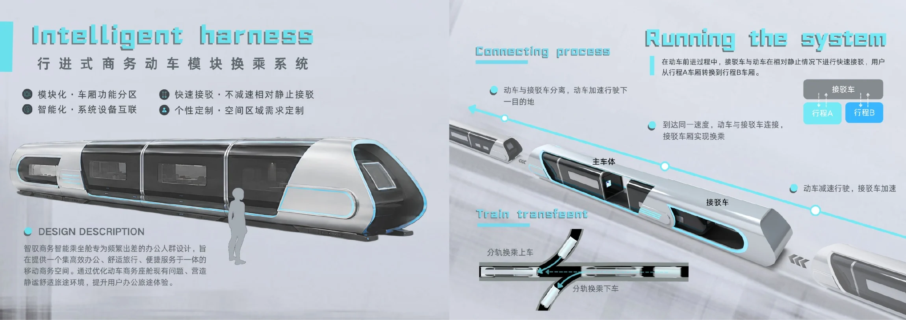
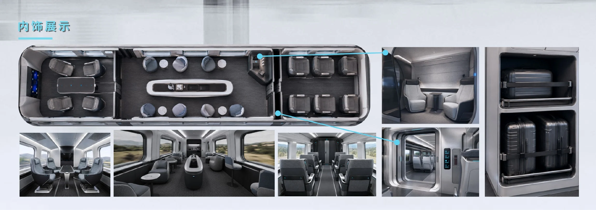
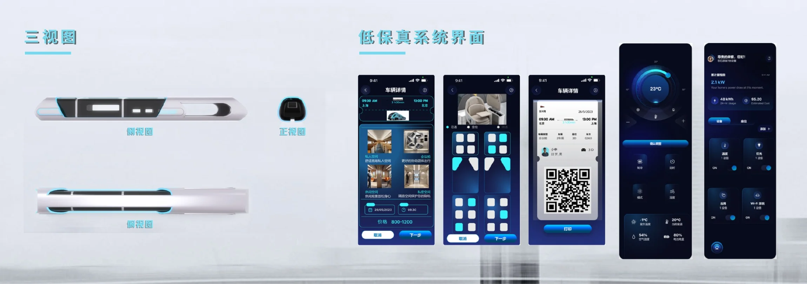

研究生 · 交通工具 · 服务设计
行进式商务动车模块换乘系统
Commercial Train
从商务出行中的工作、会议和换乘需求出发，探索车厢空间与数字服务如何协同。

项目概览
商务出行需求
从高铁商务旅客的行为和使用情境切入，梳理独立办公、会谈与换乘需求，并通过竞品分析和草图探索舱体与座席的布局。
空间与服务
通过可组合的车厢模块组织不同使用场景。作品同时展示车体造型、内部空间以及与换乘服务配套的界面。
项目图稿




